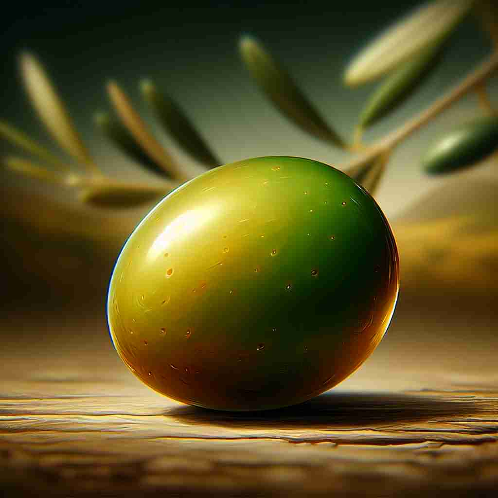

💬 The green olive fruit is used to make delicious oil.

💬 This green olive grows on the olive tree.
🔈 ['ɒlɪv]
🗝️ n. a small oval fruit with a hard stone and bitter flesh, eaten as food and used as a source of oil
🖼️ 在意大利的一个传统市场上，小摊上摆满了各种食品。一位顾客拿起一个装满橄榄的罐子，仔细挑选，他知道这种椭圆形的小果实不仅可以直接享用，还可以榨取橄榄油。旁边的商贩微笑着说：'尝一下我们最新鲜的橄榄！'
🔍 橄榄（olive）的核心含义是一种小型椭圆形水果。从这个核心含义，我们可以轻松理解它的其他用法：产生这种水果的树、这种水果的颜色，以及作为和平象征的引申义。通过将这些含义与实际的橄榄果实联系起来，你可以更好地记忆和理解这个词的多重含义。
💬 The green olive fruit is used to make delicious oil.
💬 This green olive grows on the olive tree.
🌳 来源于拉丁语 "oliva"，没有明显的前缀或后缀，主要用作名词，指橄榄或橄榄树。
💡 可以把 "olive" 和橄榄油联系在一起，记住橄榄（olive）是这种油的来源，同时想到橄榄的绿色。
🗝️ n. a tree that produces olives
🖼️ 在阳光明媚的希腊乡村，大片的橄榄树在轻风中摇曳。这些树木已经在这片土地上生长了上百年，每年都结出油亮的橄榄果实。村民们在树下忙碌地采摘，准备迎接丰收的季节。
💬 The Mediterranean landscape was dotted with olive trees.
❓ 由果实延伸到产生果实的树
🗝️ n. / adj. the dull yellowish green color of an unripe olive
🖼️ 在一个设计师的工作室里，色彩调色板上展示着各式各样的颜色。其中，一种名为'olive'的颜色尤为引人注目。这种暗淡的黄绿色让人联想到还未成熟的橄榄，是设计师用来为房间增添一丝复古与自然气息的理想选择。
💬 She wore an olive sweater that complemented her skin tone.
❓ 以果实的颜色命名的色彩
🗝️ n. a symbol of peace
🖼️ 在一个国际和平会议上，各国代表齐聚一堂。会议桌中央放置着一根橄榄枝，其悠久的历史象征着和平与和解。与会者们互相交流，致力于为世界带来更美好的未来。
💬 The dove carried an olive branch as a sign of peace.
❓ 源于古希腊神话中橄榄枝作为和平象征的传统